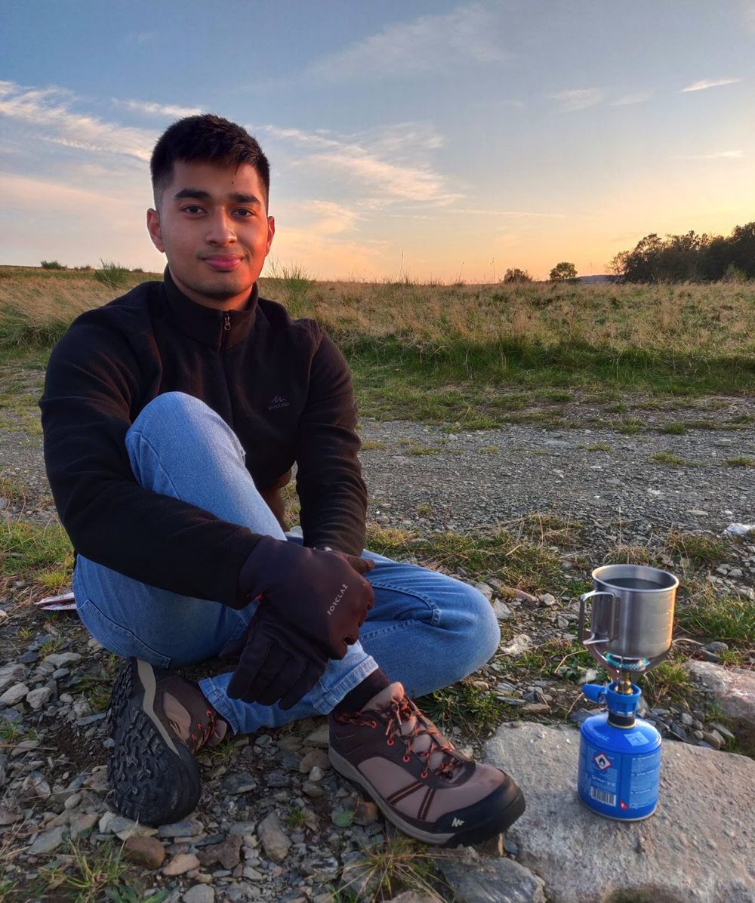
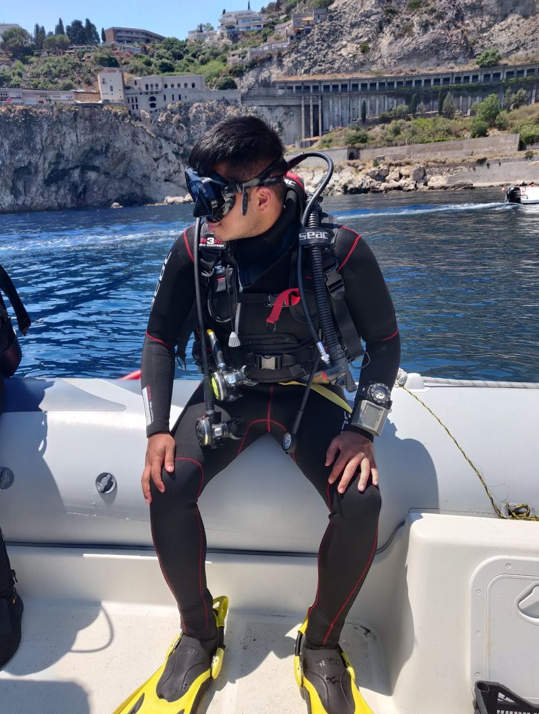

I work at the intersection of egocentric perception and robotics, on problems where perception models sharpen autonomy and real-world decision-making in robots. Within CORE Labs I lead the robotics effort, focusing on multimodal LLMs and spatial perception — getting machines to build usable spatial understanding from what they see.
My research interests span visual intelligence, temporal graphs, neuromorphic systems, embodied AI, and mixed reality. Before Rostock I trained as a roboticist across Prague, Dortmund, and Rome, working on everything from UAV grasping mechanisms and LiDAR-based SLAM to monocular depth estimation and 3D reconstruction — a hardware-to-perception range that still shapes how I think about embodied systems.
- Now
- PhD, Computer Science — University of RostockRobotics lead, CORE Labs · Institute for Visual & Analytic Computing
- M.Sc.
- Robotics — TU Dortmund, 2025 GPA 1.9Thesis at Fraunhofer IML with the DB Schenker Enterprise Lab · exchange semester in AI & Robotics at Sapienza, Rome
- B.Sc.
- Electrical Engineering & Computer Science — CTU Prague, 2020 GPA 1.6Thesis with the Multi-Robot Systems group (Dr. Martin Saska)
Research
SEPIA Spatial Egocentric Perception for Interactive Agentsactive
A perception stack that lets interactive agents build and query spatial memory from first-person video — grounding what an agent sees into where it can act.
Show2Instruct Learning manipulation from demonstrationactive
Turning human demonstrations into executable robot instructions, bridging egocentric observation and language-conditioned control.
Dynamo CORE Labsactive
Dynamic scene understanding for autonomy, developed within CORE Labs — reasoning about motion and change in unstructured environments.
PRiSM Perception, reasoning & spatial modellingexploratory
Early-stage work connecting multimodal reasoning to explicit spatial models for robot decision-making.
Publications
- 2026
MCP4IFC: IFC-based Building Design using Large Language Models
EC3 — European Conference on Computing in Construction, Corfu, Greece accepted
- 2025
Monocular Depth Estimation for Efficient Volume Reconstruction in Logistics
Manuscript in preparation in prep
- 2023
3D Models of the Martian Surface in Virtual Reality
AAS / Division for Planetary Sciences Meeting Abstracts, 55, 212.04 conference
- 2022
DoPose: Dataset for Object Segmentation and 6D Pose Estimation
Zenodo · DOI 10.5281/zenodo.6103779 dataset
- 2020
Design of an Active-Reliable Grasping Mechanism for Autonomous Unmanned Aerial Vehicles
Modelling and Simulation for Autonomous Systems (MESAS), Springer LNCS, pp. 162–179 conference
Awards & Recognition
- 20251st place, HACK:XR+AI Hackathon (TUM) — “AURA”, an adaptive XR agent for communication disorders 1st / 14 teams
- 20251st place, DLAB VCP Pitch (TU Dortmund) — mixed-reality AI workflows for logistics 1st / 5 teams
- 20241st place, Opt-In Hackathon — vision-based emotion recognition for smart lighting 1st / 8 teams
- 20232nd place, Hackathon am Ring — “Vocal Eye”, real-time voice-intent recognition microservice
- 20222nd place, Image Denoising Challenge (TU Dortmund) — PDE-based restoration of brain scans 2nd / 80
- 20201st place, MBZIRC 2020 Challenge II — international robotics challenge (UAV grasping mechanism)
Recent News
- Jun 2026Autoregressive Mosaics selected for the CVPR 2026 AI Art Gallery.
- 2026Our paper MCP4IFC: IFC-based Building Design using LLMs was accepted at EC3 2026 (Corfu).
- Jan 2026Launched a new personal site and blog — finally off Google Sites.
- Nov 2025Won 1st place at the HACK:XR+AI Hackathon (TUM) with “AURA”, an adaptive XR agent.
- Jul 2025Started my PhD in Computer Science at the University of Rostock, leading the robotics effort at CORE Labs.
Writing
A new home for the lab notebook
Why I moved off Google Sites, and how the blog works — push a markdown file, get a post.
Beyond research
Outside the lab I'm happiest outdoors — backpacking, camping, and in the ocean as a hobby surfer and PADI open-water diver. I shoot film photography and paint — including two submissions to the CVPR Art Gallery — play poker, cook, and read science fiction.


Contact
Happy to talk about egocentric perception, robotics, or collaborations — email is the surest way to reach me.